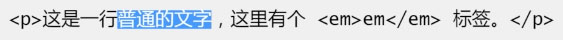
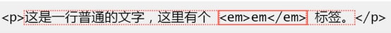
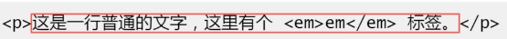
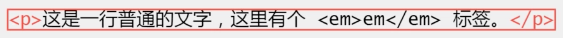

spinx
spinx
100px
行高是说两行文字的基线的距离，一般基线可以理解为x的下边缘的位置(在字体为simsun前提下)
行高可以让单行文本近似垂直居中

x
font-size:0100
行高与图片近似垂直居中(vertical-align:middle在font-size为0时绝对垂直居中)
行内框盒子模型
1.内容区域(Content Area),可以理解成选中的区域

2.内联盒子(Inline Boxes),inline标签盒子与匿名盒子(光秃秃的文字)

3.行框盒子(Line Boxes),每一行就是一个"行框盒子"

4.包含盒子(Containing Boxes),包含盒子

测试
测试
内联元素的高度是由line-height决定的,而不是由font-size决定的!
1.行高由于其继承性,影响无处不在,即使单行文本也不例外
2.行高只是幕后黑手,高度的表现不是行高,而是内容区域和行间距
内容区域高度(Content Area)+行间距(Vertical Spacing)=行高(Line Height)
1.内容区域高度只与字号以及字体有关,与line-height没有任何关系
2.在simsun字体下,内容区域高度等于文字大小值
行间距计算公式:line-height - font-size
半行间距计算公式:(line-height - font-size) / 2
行高决定内联盒子高度;行间距墙头草,可大可小(甚至负值),保证高度正好等同于行高.
如果行框盒子里面有多个不同行高的内联盒子,行高不一定由最高的那个内联盒子决定.
这是一行普通的文本,点击显示行高
这是一行普通的文本,里面有个em标签
多行文本的高度就是单行文本高度的累加
line-height:normal(默认值),跟着浏览器走,且与元素字体关联
line-height:1.5,使用数值作为行高值,根据当前元素的font-size大小计算,例如font-size:20px;line-height:1.5,则真正的行高为30px
line-height:30px;使用固定大小
line-height:150%;相对于设置了该line-height的font-size进行计算
line-height:1.5与line-height:150%的区别:
1.line-height:1.5,所有可继承元素根据font-size重新计算行高
2.line-height:150%,当前元素根据font-size计算行高,然后把计算后的值,继承给下面的元素
行高可以与font-size一同设置
body {
font-size:14px/1.4286 simsun;
}
 x
x
行高并不会影响图片的高度,造成高度影响的是文字,默认vertical-align:baseline,所以,会和x下边缘对齐
即使,没有x文本,也会是这样,可以理解p标签内存在一个隐匿文本节点
小图片和大文字
 x这是一段文字,可以使用vertical-align控制小图标位置
x这是一段文字,可以使用vertical-align控制小图标位置
vertical-align:middle实际是基线往上1/2x的高度,并非绝对垂直居中
图片近似水平、垂直居中
x
多行文本水平、垂直居中
多行文本水平垂直居中实现的原理
跟上一页图片的实现是一样的,区别在于要把
多行文本所在的容器的display属性转换为
display:inline-block,以及重置外部继承
的text-align和line-height属性值.
x
题外话:height:36px;line-height:36px;其中height:36px没什么用